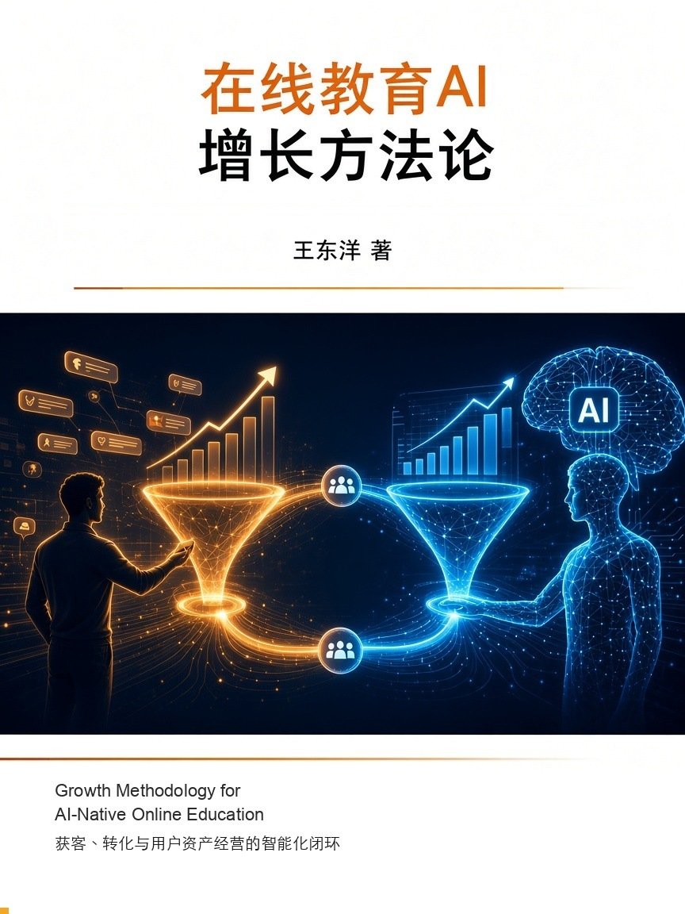

获客、转化、用户资产经营与决策闭环 王东洋 著 GROW 在线教育AI增长方法论 查看书籍封面 →  作者介绍 王东洋 · 希望学增长产研负责人。聚焦在线教育增长链路中的 AI 应用：内容、直播、投流、私域、用户资产与决策中枢。 第一章 在线教育增长的新范式：为什么要用 AI 1.1 后流量时代：在线教育增长的核心矛盾1.2 增长的三大痛点：看数据难、用户资产沉睡、增长动作分散1.3 AI 在增长链路中的角色演进：辅助工具、智能助手、决策引擎1.4 本书的框架：渠道、内容、直播、私域、用户资产、决策 第二章 AI 内容生产：IP 打造与爆款流水线 2.1 IP 创作线上流水线：标准化、可量产、可复制2.2 AIGC 视频与图片生成：把素材供给变成可计划的事2.3 Agent 智能剪辑与爆款拆解：从“可共鸣”到“可涨粉”2.4 爆款开头与钩子设计：教研资料与工具合并的方法2.5 数字人定制与批量矩阵账号运营 第三章 AI 直播运营（上）：直播星盘的中控能力 3.1 直播间的数据基建：十八项核心实时指标3.2 AI 场控：关键词自动回复与语义理解3.3 AI 质检：违禁词实时巡检与合规风险预警3.4 AI 水军与自动发评：氛围营造的边界与方法3.5 用户洞察：评论意图识别、AI 建议与人少模式 第四章 AI 直播运营（下）：复盘与爆单方法论 4.1 智能复盘报告：数据诊断、链路归因与 AI 总结4.2 话术沉淀：高转化话术的 AI 提炼与知识库化4.3 年级成交分析、问询转化与爆单节点拆解4.4 竞品直播间抓取与主播话术分析4.5 从单直播间闭环到多直播间作战、智能增长闭环 第五章 AI 投流：素材、竞价与品牌广告 5.1 投流基础：oCPM 竞价、GD 保量、FeedsLive 的选择逻辑5.2 AI 素材生产：自动生图与素材工厂5.3 智投闭环：自动生图、自动实验、自动分析、自动优化5.4 资源位精细化运营：营销节点触发的素材迭代5.5 从素材优化到内容与全局联动 第六章 私域与线索经营的 AI 化 6.1 图书导流链路：从加微到履约到 Leads 析出6.2 AI 会话能力层：自动答疑替代大部分人工6.3 意向识别：履约信号捕捉与高意向分层6.4 标签体系与培育池：未析出用户的 SOP 沉淀6.5 小红书转化飞轮：矩阵种草、钩子留资、私域养熟 第七章 用户资产经营：从看板到生命周期矩阵 7.1 用户资产总盘：总量、质量与结构7.2 生命周期与价值状态的二维模型7.3 四大用户池：新潜、首购、高价值、流失高潜7.4 用户资产矩阵的应用逻辑：跃迁、裂变、召回、防流失7.5 数据口径与看板建设实战 第八章 增长决策 Agent：让数据自己说话 8.1 增长决策 Agent 的项目拆解：五维分析8.2 渠道增长分析器：漏斗效率、用户质量与边际成本8.3 转化结构分析器与用户资产分析器8.4 专项 Agent 体系：诊断、预测与分层8.5 增长洞察日报与机会排行榜 第九章 组织落地：AI 增长的推广、培训与迭代 9.1 工具产品化：官网分发、自动更新与一对一指导9.2 业务培训与采纳：从试点团队到全量覆盖9.3 版本路线图管理：MVP、中控与闭环的三期规划9.4 AI 能力的准确率优化与持续迭代9.5 效果归因：判断这次增长为什么成了，或者没成 第十章 未来展望：全链路智能增长 10.1 全链路 ROI 归因与 AI 决策引擎10.2 素材、投流、直播、复盘的自动闭环10.3 数字人直播、虚拟外呼与新兴渠道探索10.4 从增长工具到增长组织：人机协作的新分工10.5 在线教育增长的终局：数据资产与 AI 能力的复利